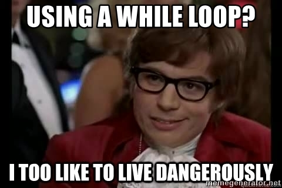

CH4 : Constructions élémentaires⚓︎
Programme officiel
Programmer un ordinateur, c'est quoi ? Programmer, c'est créer des programmes (suite d'instructions données à l'ordinateur) ! Un ordinateur sans programme ne sait rien faire. Il existe différents langages qui permettent de programmer un ordinateur, mais le seul directement utilisable par le processeur est le langage machine (suite de 1 et de 0). Aujourd'hui (presque) plus personne ne programme en langage machine (trop compliqué).
Les informaticiens utilisent des instructions (mots souvent en anglais) en lieu et place de la suite de 0 et de 1. Ces instructions, une fois écrites par le programmeur, sont "traduites" en langage machine. Un programme spécialisé assure cette traduction. Ce système de traduction s'appellera interpréteur ou bien compilateur, suivant la méthode utilisée pour effectuer la traduction.
Il existe 2 grandes familles de langages de programmation :
Les langages de bas niveau sont très complexes à utiliser, car très éloignés du langage naturel, on dit que ce sont des langages « proches de la machine », en contrepartie ils permettent de faire des programmes très rapides à l'exécution. L'assembleur est le langage de bas niveau. Certains "morceaux" de programmes sont écrits en assembleur encore aujourd'hui.
Les langages de haut niveau sont eux plus "faciles" à utiliser, car plus proches du langage naturel (exemple : si a=3 alors b=c). Exemples de langages de haut niveau : C, C++ , Java, Python...
En NSI, notre langage de prédilection sera Python.
1. Séquence, Variables, Affectation⚓︎
1.1 Séquence d'intructions⚓︎
Un programme est une suite d'instructions écrite dans un langage.
En Python, les instructions (lignes du programme) sont évaluées et exécutées de haut en bas, à l'exception des lignes de commentaires qui commencent #.
Exemple :
Le programme ci-dessous n'affiche que Bonjour en sortie car la deuxième ligne est commentée.
1 2 | |
1.2 Variables⚓︎
C'est une information (une donnée) temporaire que l'on stocke dans une case de la RAM. On dit qu'elle est "variable", car c'est une valeur qui peut changer pendant le déroulement du programme.
À savoir
Une variable est constituée de 2 choses :
- une valeur présente en mémoire (un nombre entier, un nombre à virgule, un booléen, une chaine de caractères, ...);
- un nom.
Une variable est l'association d'un nom et d'une valeur.
Exemple :
i = 12
Grâce à cette ligne, nous avons défini une variable qui porte le nom i. Ce nom i est associé à la valeur 12.
Important
Le signe = n'a pas la même signification qu'en mathématique. C'est le signe d'affectation. Si on écrit i = i + 1, cela signifie que l'on ajoute 1 à la valeur de i. Le "nom" i pointe maintenant vers la "valeur" 13.

Nommage des variables
Les règles à respecter :
-
le nom de la variable peut contenir les caractères suivants :
- des lettres non accentuées (attention, minuscule et majuscule sont des caractères différents)
- des chiffres (mais pas comme premier caractère)
- le tiret du bas _ (underscore, tiret du 8)
-
le nom de la variable ne doit pas commencer par un chiffre
- le nom de la variable ne doit pas contenir d'espace
- le nom de la variable ne doit pas être un mot-clé du langage.
Et surtout des noms explicites !
Pas bien :
if d == 1:
cep = cep + vm
Bien :
if date == 1:
compte_epargne = compte_epargne + versement_mensuel
On utilisera la convention snake_case pour les noms à rallonge.
1.3 Typage des variables⚓︎
Pour différencier la nature de ce que peut contenir une variable, on parle de type de variable.
En voici quelques uns, que nous découvrirons au fil de l'année :
Types de base
Voici les types Python les plus fréquemment utilisés cette année:
| Type Python | Traduction | Exemple |
|---|---|---|
int |
entier | 42 |
float |
flottant (décimal) | 3.1416 |
str |
chaîne de caractères (string) | "NSI" |
bool |
booléen (True ou False) | True |
tuple |
p-uplet | (255, 127, 0) |
list |
liste | [0, 1, 2, 3, 4, 5] |
dict |
dictionnaire | {'Homer':43, 'Marge':41, 'Bart':12, 'Lisa':10, 'Maggie':4} |
function |
fonction | print |
Comment connaître le type d'une variable ?
Il suffit dans la console d'utiliser la fonction type.
>>> a = 1
>>> type(a)
<class 'int'>
2. Instructions conditionnelles⚓︎
2.1 if⚓︎
La structure conditionnelle if permet exécuter une (ou plusieurs) instruction(s) SI une condition est vraie (et seulement dans ce cas là).
age = int(input("T'as quel âge ? "))
if age < 18:
print("Tu es mineur")
Important
- Remarquer que dans ce cas, il n'y aura aucun affichage si l'age est supérieur (ou égal) à 18.
- présence obligatoire du
:après la condition et indentation du bloc d'instruction.
L'évaluation de la condition⚓︎
L'expression qui suit le if est évaluée par Python lors de l'exécution du programme.
Cette évaluation renvoie un booléen, True ou False.
Les symboles de comparaison (ou d'appartenance) permettant d'écrire une condition sont :
Opérateurs de comparaison
| Opérateur | Signification |
|---|---|
== |
est égal à |
!= |
est différent de |
< |
inférieur à |
> |
supérieur à |
<= |
inférieur ou égal à |
>= |
supérieur ou égal à |
in |
appartient à |
not in |
n'appartient pas à |
Exemples
>>> a = 2
>>> a == 3
False
>>> a == 2
True
>>> a != 1
True
>>> a > 2
False
>>> a >= 2
True
>>> a <= 2
True
>>> a <= 5
True
>>> 'e' in 'abracadabra'
False
>>> 'b' in 'abracadabra'
True
>>> 'A' not in 'abracadabra'
True
>>> not True
False
De plus, ces conditions peuvent être combinées avec (par exemple) les mots-clés and ou or :
>>> b = 20
>>> b > 15 and b < 30
True
>>> b > 2000 or b < 30
True
2.2 ìf / else⚓︎
La structure conditionnelle if.. else.. permet de n'exécuter une (ou plusieurs) instruction(s), que SI la condition du if est Vraie, SINON ce sont les (autres) instructions situées après le else qui sont exécutées.
age = int(input("T'as quel âge ? "))
if age < 18:
print("Tu es mineur")
else:
print("Tu es majeur")
Dans tous les cas (quel que soit l'âge), une des deux phrase est affichée (on ne peut oublier personne).
2.3 if / elif / else⚓︎
La structure conditionnelle if .. elif .. else .. permet de réaliser plusieurs (plus de deux) tests de comparaison.
age = int(input("T'as quel âge ? "))
if age<18:
print("T'es trop jeune")
elif age >= 18 and age < 30: # else if <=> elif
print("T'es jeune, t'es sympa!")
else: # dans tous les autres cas (age >= 30)
print("T'es trop vieux!")
3. Boucles⚓︎
3.1 Boucle bornée⚓︎
a. Iterable⚓︎
Lorsqu'on peut associer un nombre à chaque élément d'un ensemble, on dit que l'ensemble est dénombrable. Les élèves aux lycée sont un ensemble dénombrable. En informatique, lorqu'on peut énumérer les éléments d'un objet on parle d'iterables.
Exemples :
NSI(typestr) est itérable : il y a 3 caractèresN,SetI;[2, 7, 8](typelist) est itérable : il y a 3 éléments2,7et8;5.3(typefloat) n'est pas itérable. On ne peut pas le décomposer.
b. Structure de la boucle for⚓︎
À connaître
La boucle for s'utilise lorsque :
- on veut parcourir un à un les éléments d'un objet itérable (une chaîne de caractère, une liste...);
- on veut répéter une action un nombre de fois connu à l'avance. On parle de boucle bornée.
La structure générale est :
for element in iterable:
instruction 1
instruction 2
...
Important
- le mot
inpermet de parcourir l'itérable; :obligatoire;- indentation obligatoire du bloc d'instruction(s).
Des exemples :
>>> for car in 'NSI':
print(car)
N
S
I
>>> for i in range(4):
print('NSI')
NSI
NSI
NSI
>>> for nb in [3, 5]:
print(nb * 2)
6
10
Remarques
Fonction range
La fonction range possède trois arguments dont deux sont optionnels :
range(n)renvoie un itérateur parcourant les entiers consécutifs entre 0 et n exclu;range(m, n)renvoie un itérateur parcourant les entiers consécutifs entre m et n exclu;range(m, n, p)renvoie un itérateur parcourant les entiers consécutifs entre m et n exclu avec un pas de p;
>>> for i in range(10, -1, -2):
print(i)
10
8
6
4
2
0
Boucles imbriquées
Le bloc d'intruction(s) d'une boucle peut contenir une autre boucle.
>>> for i in range(3):
for j in range(2):
print(i, j)
0, 0
0, 1
1, 0
1, 1
2, 0
2, 1
3.2 Boucle non bornée⚓︎
À la différence essentielle des boucles for, dont on peut savoir à l'avance combien de fois elles vont être exécutées, les boucles while sont des boucles dont on ne sort que lorsqu'une condition n'est plus satisfaite.
Avec donc le risque de rester infiniment bloqué à l'intérieur !

À connaître
Syntaxe à retenir pour la boucle while :
while condition:
instruction 1
instruction 2
...
True: on continue;False: C'est terminé.
Important
- présence obligatoire du
:après la condition; - indentation obligatoire du bloc d'instruction(s);
- La condition doit être un booléen donc une expression évaluée à
Trueou àFalse.
Exemple :
>>> a = 0
>>> while a < 3:
print("Ok")
a = a + 1
print("fini")
Ok
Ok
Ok
fini
Les pièges
>>> a = 4
>>> while a > 3:
print("Ok")
a = a + 1
>>> a = 0
>>> while a > 3:
print("Ok")
a = a + 1
>>>
Remarques
Lien entre for et while
La boucle bornée for que nous avons étudiée est très pratique. Mais nous pourrions nous en passer : toutes les boucles for peuvent en fait être ré-écrites en utilisant while. (alors que la réciproque est fausse).
Boucle infinie volontaire
La boucle infinie a été présentée comme un danger qu'il faut éviter. Pourtant, dans quelques situations, il est d'usage d'enfermer volontairement l'utilisateur dans une boucle infinie (jeux, affichage, ...).
Exemple :
1 2 3 4 5 | |
Le début du code : while True est typique des boucles infinies volontaires.
Et l'expression break qui comme son nom l'indique permet de casser la boucle et donc d'en sortir. Son emploi est controversé parmi les puristes de la programmation. Nous dirons juste que c'est une instruction bien pratique.
4. Fonctions⚓︎
Les fonctions permettent de décomposer un programme complexe en une série de sous-programmes plus simples. De plus, les fonctions sont réutilisables : si nous disposons d'une fonction capable de calculer une racine carrée, par exemple, nous pouvons l'utiliser un peu partout dans notre programme sans avoir à la réécrire à chaque fois.
4.1 Définition d'une fonction⚓︎
La notion de fonction en informatique est comparable à la notion de fonction en mathématiques.

À retenir
Voici la syntaxe employée en Python pour définir une fonction.
1 2 3 4 | |
Important
- ne pas oublier les
:; - Le décalage entre la ligne 1 et le reste du code est appellé indentation. Ce bloc de code correspond au contenu de la fonction. Pour indenter vous insérer une tabulation Tab.
- en l'absence du mot
return, la fonction renvoieNonecad "rien"!
Bien / Pas bien
On veut créer une fonction calculer_surface_carre qui prend en paramètre un nombre arrete et qui renvoie la surface du carré d'arrête arrete.
1 2 3 | |
>>> cote = 2
>>> print(f"La surface d'un carré d'arrête {cote} est de {calculer_surface_carre(cote)}.")
La surface d'un carré d'arrête 2 est de 4.
calculer_surface_carre(cote) revient à calculer calculer_surface_carre(2) et cette expression est évaluée à 4.
1 2 3 | |
Dans un premier temps, on a l'impression que la fonction fait le "job".
>>> calculer_surface_carre(2)
4
Ben ça marche ! Sauf que "y a pas de return" ! La fonction ne renvoie rien. Elle ne fait que de l'affichage.
>>> cote = 2
>>> print(f"La surface d'un carré d'arrête {cote} est de {calculer_surface_carre(cote)}.")
La surface d'un carré d'arrête 2 est de None.
C'est bof bof !

4.2 Portée des variables⚓︎
À retenir
- Les variables définies dans le corps d'une fonction sont appelées variables locales.
- Les variables définies dans le corps du programme (sous-entendu : pas à l'intérieur d'une fonction) sont appelées variables globales.
Règles d'accès aux variables locales et globales 
- règle 1 : une variable locale (définie au cœur d'une fonction) est inaccessible hors de cette fonction.
- règle 2 : une variable globale (définie à l'extérieur d'une fonction) est accessible en lecture à l'intérieur d'une fonction.
- règle 3 : une variable globale (définie à l'extérieur d'une fonction) ne peut pas être modifiée à l'intérieur d'une fonction.

Exercice
On considère les 3 codes ci-dessous. Pour chacun, dire sans l'exécuter s'il est valide ou non. S'il ne l'est pas, identifier la règle (parmi celles énoncées ci-dessus) qui est bafouée. code A
1 2 3 4 5 | |
1 2 3 4 | |
1 2 3 4 5 6 7 8 9 | |
Ce code n'est pas valide, car il contrevient à la règle 3.
ligne 4 : la modification de la variable globale points est interdite.
Ce code n'est pas valide, car il contrevient à la règle 1.
ligne 5 : l'accès à la variable locale x est interdit.
Ce code est valide.
ligne 6 : l'accès à la variable globale bonus est autorisé, selon la règle 2.
Sources
Pages tirées de :